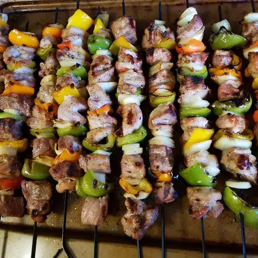

<div class="container">
    <div class="recipe-card">
        <h1>Souvlaki</h1>
        
        <div class="recipe-description">
            <h2>Description</h2>
            <p>Souvlaki is a Greek fast food that consists of meat grilled on a skewer. It can be served alone or inside of a rolled pita. It’s traditionally made with pork, but it’s also commonly made with chicken, beef, or lamb.</p>
            <h2>Ingredients</h2>
            <ul>
                <li>¼ cup olive oil</li>
                <li>¼ cup soy sauce</li>
                <li>1 medium lemon, juiced</li>
                <li>3 cloves garlic, crushed</li>
                <li>1 teaspoon dried oregano</li>
                <li>3 pounds pork tenderloin, cut into 1 inch cubes</li>
                <li>2 medium yellow onions, cut into 1 inch pieces</li>
                <li>2 medium green bell peppers, cut into 1 inch pieces</li>
                <li>1 pinch white sugar</li>
                <li>1 (8 ounce) package lasagna noodles</li>
            </ul>
            <h2>Steps</h2>
            <ol>
                <li>Mix oil, soy sauce, lemon juice, garlic, and oregano, and garlic together in a large glass bowl. Add pork, onions, and bell peppers, and stir until coated. Cover and refrigerate for 2 to 3 hours.</li>
                <li>Preheat an outdoor grill for medium-high heat and lightly oil the grate.</li>
                <li>Remove pork and vegetables from marinade and shake off excess; thread onto skewers. Discard remaining marinade.</li>
                <li>Cook on the preheated grill, turning frequently, until pork is no longer pink in the middle, 10 to 15 minutes. An instant-read thermometer inserted into the center should read at least 145 degrees F (63 degrees C).</li>
            </ol>
        </div>
    </div>
</div>